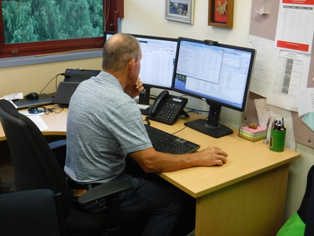
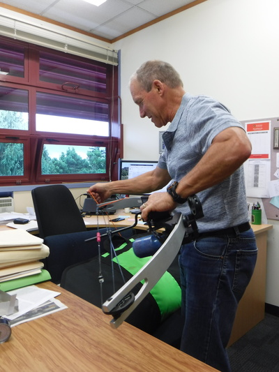
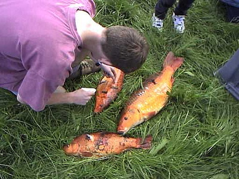
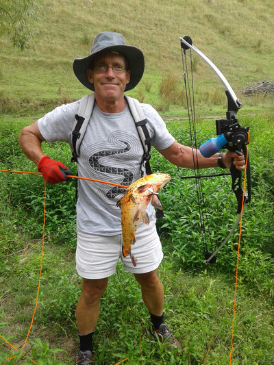
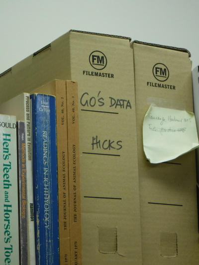

釣行日誌 ＮＺ編 「一期一会の旅：A Sentimental Journey」
ヒックス教授を表敬訪問
12/03(MON)-1
今日は母校のワイカト大学（中退だけれど....）に行き、留学生時代の指導教官だったヒックス教授を表敬訪問する予定が入っていた。朝９時半に約束していたので、９時前に田島家を出たのだけれど、久しぶりでまたまた道が判らず、大学構内に着いてからも今度は有料駐車場の場所が判らずにしばらく迷ったが、結局学生の頃よく停めていた駐車場に入れたらそこにカード式の料金所があって支払った。銀行のデビットカードあるいはクレジットカードのみ使えるようで、小銭は使えなかった。うーん、大学も進歩したなぁと感心させられる。
約束の10分遅れで生物学のＥ棟２階に行って受付で訊ねると、ヒックス教授は８年前とは部屋が変わり、ＣＢＥＲ（The Centre for Biodiversity and Ecology Research : 生物多様性と生態学研究センター）の研究棟に移られたとのこと。再び１階に降りて懐かしの研究棟に行き、部屋のドアが開いていたのでそっと声を掛けると、ブレンダン・ヒックス教授は何やらＰＣにデータを打ち込んでいる最中だった。

「ハイ！ブレンダン！ お久しぶりです！」
「やぁゴウ！ よく来たなぁ！ まぁ座れ座れ。」
ということで、昨今の教授や学生たちの研究テーマから、目下最も力を入れて取り組んでいる現地調査、僕の近況など話は弾んだ。１時間ほどおしゃべりした後で、教授の机の脇にビニールケースに入った小型のボディボードのようなものが目に付いたので、これは何ですかと訊ねると、教授は待ってましたとばかりにケースから中身を取り出した。

彼が得意げに見せて説明してくれたのは、ボウ・フィッシング（Bow Fishing 参照）用の洋弓だった。ＮＺでは有害な外来種であるコイ（Koi Carp）をこれで狩るのだ。ワイカト地方では湖や池で、日本から観賞用に持ち込まれたコイが野生化・繁殖し、湖底を攪乱して水質汚染の原因となっているということで、僕が留学していた頃から問題視されていた。僕も一度、ヒックス教授に連れられて他の学生たちとボウ・フィッシング大会で捕獲されたコイの体長・体重などを計測しに現地調査に出向いたことがあった。あれはもう18年も前のことになるのだなぁ。
教授のボウ・ガンは軽金属製のゴツい弓と合成繊維の弦、照準器、リール、30ｍほどのコード付き矢から出来ており、名人クラスになると25ｍほど離れたところに浮いているコイを仕留めることが出来るそうだ。ニュージーランドで増えたコイは、ほとんどがオレンジ色なので、水面近くに居れば良く目立って遠くからでも狙えるのだ。腕さえ有れば。

ブレンダンは近年このボウ・フィッシングが趣味となり、月に２回くらい出かけているとのこと。獲物は持ち帰ってフライパンで焼いたり揚げたりして食べているそうだ。自分で作るランチのサンドイッチにもなるよと笑っていた。コイの焼き物、揚げ物？？と一瞬たじろいだが、顔色には出さずに微笑んでいると
「ちょっと試してみるかい？」
と勧めてくれたので、弓を持って弦を引き絞ろうと頑張ったが、思いのほか強い弓で非力な僕には十分引き絞ることが出来なかった。
「いやぁ、けっこう強いですねぇ！ 僕にはちょっと無理ですよ。」
だいぶ髪は白く薄くなったものの、マッチョなブレンダンなら簡単だろうと思われた。
「ハハ。フライフィッシングほどの繊細さは無いけど、打った弓が思い通りに当たってコイが掛かったら面白いぞ。」
教授が笑う。

弓矢の矢尻にも工夫がしてあり、アルミ製の返し（アゴ：バーブ）が折りたたみ式で、刺さる時にはたたまれて刺さり、抜こうとすると広がって抵抗になる機構だった。
続いてパソコンの前に二人して座り、最近の野外調査場所をいくつかグーグルマップで案内してもらう。今では研究にドローンを使って空撮をする学生もいるそうで、そのビデオクリップを見せられると隔世の感があった。またブレンダンはジョギング、マラソンも趣味で、毎日ランチ前に走っているとのこと。ＧＰＳ付きの腕時計でログしたデータをグーグルマップに取り込むと、経路や標高がグラフ化されるそうだ。これはこの間のウェリントン出張の合間のジョギングデータだよ、と海岸沿いのかなりアップダウンのあるコースが示されていた。
また、最近大学の隣に研究施設があるＮＩＷＡに、魚道に詳しい研究者の方が赴任してきて、2001-2002年頃に行った僕のホワイトベイトの遡上実験データを再び取り出して解析してくれていると話してくれた。うまく行けば一本の論文になるかも知れないとのことだった。ブレンダンの書類棚には僕の集めたデータのファイルボックスが仕舞ってあるのが見えて、昔の苦労が報われるかも知れないと思うと、とても嬉しかった。

などと夢中でよもやま話をしていると、教授が10時半から他の学生２人とミーティングがあるので、コーヒータイムを兼ねて同席するかいと訊ねてきた。ええ、もちろん！と答え、広いキャンパスを横切ってカフェに向かう。
釣行日誌ＮＺ編 目次へ
サイトマップ
ホームへ
お問い合わせ